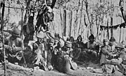
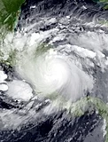

From today's featured article
The Sayfo, or Assyrian genocide, was the mass slaughter and deportation of Assyrian and Syriac Christians in southeastern Anatolia and Persia's Azerbaijan province committed committed by Ottoman forces and Kurdish tribes during World War I. The Assyrians lived in mountainous and remote areas and were divided into several mutually antagonistic churches. Mass killing of Assyrian civilians began in January 1915, by the Ottoman military and pro-Ottoman Kurds. Attacks on, massacres of and deportations of Christian populations continued until 1919, usually facing only sporadic armed resistance. Ottoman Assyrians living in present-day Iraq and Syria were not targeted. The Sayfo occurred concurrently with and was closely related to the Armenian genocide. Motives included a perceived lack of loyalty among some Assyrian communities to the Ottoman Empire and a desire to appropriate their land. In 1919 the Assyrians said that roughly 250,000 were killed in the genocide, about half the pre-war population.
Did you know...
- ... that the white design on the national Māori flag (pictured) is a traditional Māori koru, or fern frond, representing renewal and hope for the future?
- ... that Fritz Pleitgen, who interviewed Mikhail Gorbachev and Ronald Reagan, directed the broadcaster WDR from 1995 to 2007?
- ... that passenger service on the Ridgefield Branch was eliminated after the electrification of neighboring lines?
- ... that there are palaces named the Ranjit Vilas in Rajkot, in Ratlam and in Wankaner?
- ... that the pro-adoption documentary I Lived on Parker Avenue premiered at the Louisiana Governor's Mansion in 2018 at the invitation of Governor John Bel Edwards?
Archive · Start a new article · Nominate an article
Recent deaths: Charles Sherrod · Leonard Kriegel · Michael Callan · Margie Masters · Billy Al Bengston · Julian Hammond
In the news

- Hurricane Julia (satellite image shown) leaves more than 70 people dead across South and Central America.
- After an explosion damages the Crimean Bridge, Russia attacks many Ukrainian cities with missiles.
- In motor racing, Max Verstappen wins the Formula One World Championship .
- The Nobel Prize in Chemistry is awarded to Carolyn Bertozzi, Karl Barry Sharpless, and Morten P. Meldal for their work on click chemistry and bioorthogonal chemistry.
Ongoing: Mahsa Amini protests · Russian invasion of Ukraine
Recent deaths: Charles Sherrod · Leonard Kriegel · Michael Callan · Margie Masters · Billy Al Bengston · Julian Hammond
On this day
- 1548 – Forces of the Burmese Toungoo dynasty led by King Tabinshwehti (depicted) departed Martaban to begin an invasion of the Ayutthaya Kingdom.
- 1947 – American test pilot Chuck Yeager became the first person to break the sound barrier, reaching Mach 1.06 on board the Bell X-1, an experimental rocket-powered aircraft.
- 1980 – The 6th Congress of the Workers' Party concluded, having anointed North Korean president Kim Il-sung's son Kim Jong-il as his successor.
- 2011 – Michael Woodford was dismissed as the CEO of the optics manufacturer Olympus after uncovering internal financial misconduct, escalating the corporate scandal into one of the largest in Japanese business history.
- 2012 – Felix Baumgartner jumped from a helium balloon in the stratosphere to become the first person to break the sound barrier without vehicular power.
Ongoing: Mahsa Amini protests · Russian invasion of Ukraine